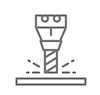

Szolgáltatásaink
Vegye igénybe Ön is a Zsilka Mechanika szolgáltatásait:
Alkatrészgyártás
Godard pabst prism fam cliche.
Préselés
Préselt lemezalkatrészek készítése.
Hegesztés
Hegesztett alkatrészek, AWI, MIG/MAG.

Üregelés
ékpályák, hornyok készítése.
Helyzetfúrás
acél, alumínium öntvények, alkatrészek fúrása, menetfúrása.
Esztergálás
Godard pabst prism fam cliche.
Marás
Godard pabst prism fam cliche.
Préselés
3-63 tonnáig.
Lemezdarabolás
4x2000 mm.
Lemezhajlítás
4x2000 mm.
Acélszerkezetek
Acélszerkezetek készítése.
"C" sín
"C" sín készítés különböző méretekben.